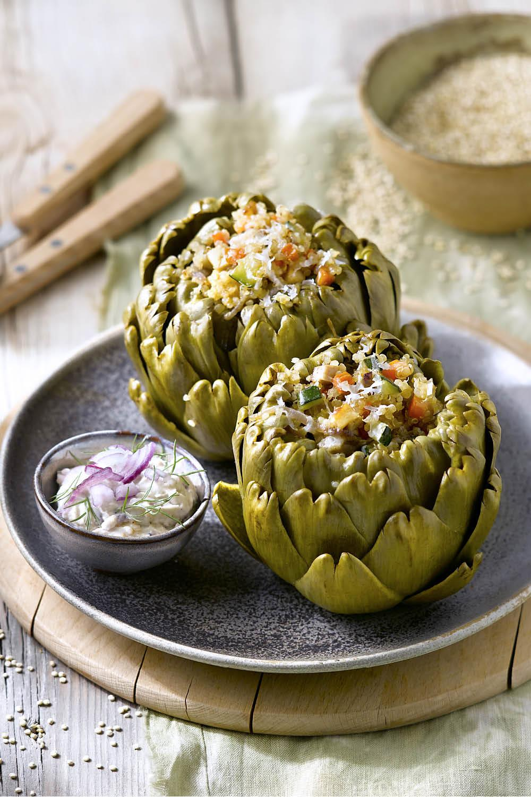
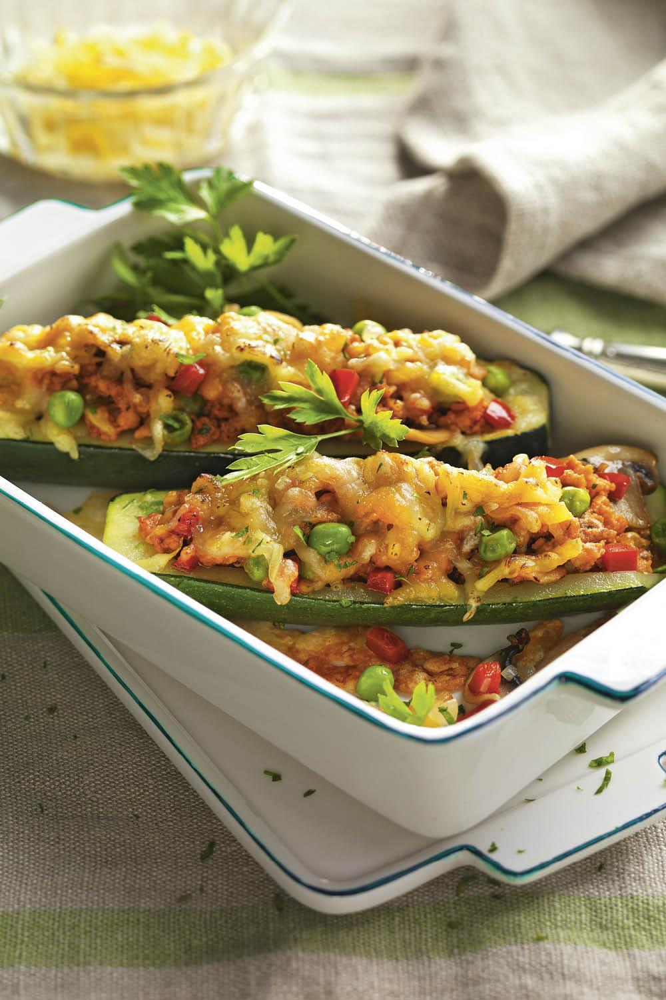
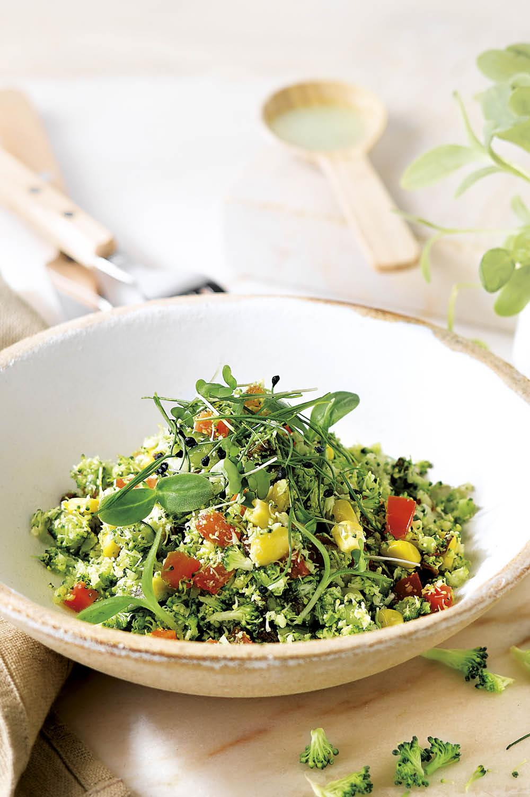
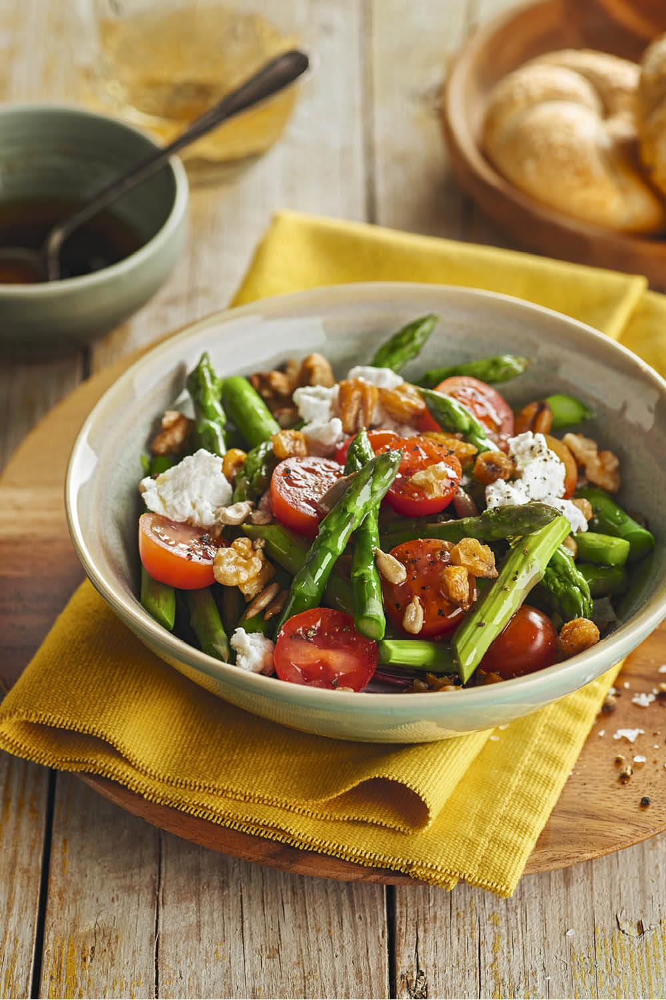
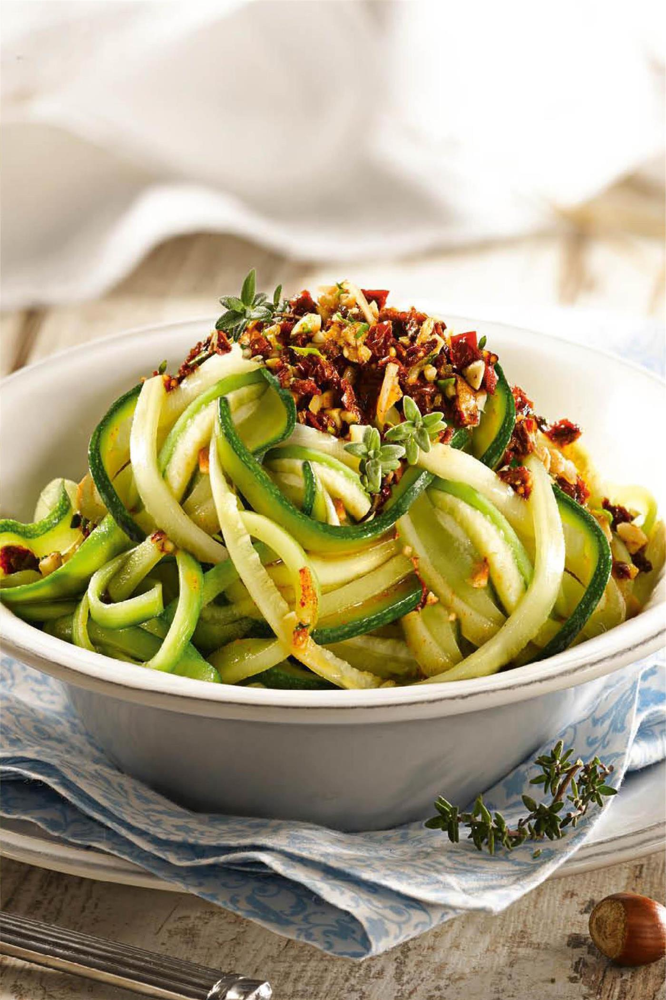

ALCACHOFAS RELLENAS DE QUINOA

- Alcachofas
- Cebolla
- Quinoa precocinada
- Tomate trirurado
Ver más
ARROZ CON TOFU ENCEBOLLADO Y VERDURAS

- Arroz precocinado
- Brócoli
- champiñones
- Tofu
Ver más
CALABACINES RELLENOS

- Calabacines
- Cebollas
- Tomate
- queso mozzarella
Ver más
CUSCÚS DE BRÓCOLI CON GERMINADOS

- Brócoli sin tallo
- Zanahoria
- Aceitunas
- Brócoli
Ver más
ENSALADA DE ESPÁRRAGOS Y REQUESÓN

- Espárragos verdes
- Tomates cherry
- Requesón
- Aceite de oliva
Ver más
ESPAGUETIS DE CALABACÍN CON PESTO ROJO

- Calabacines
- Tomates secos
- Cebolleta
- Queso parmesano rallado
Ver más